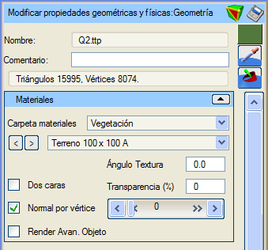
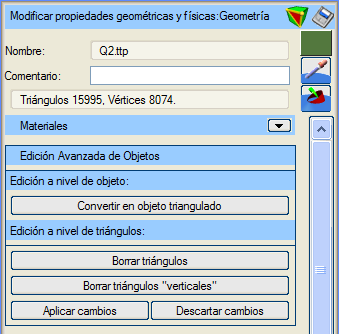
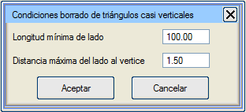
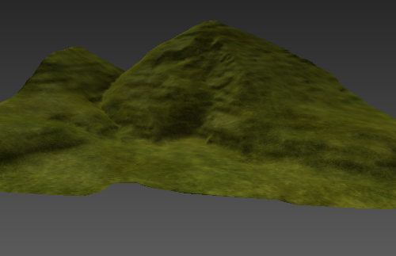

| |
|
Arazi
|
|
Genel Bilgiler Arazi, Topografya menüsündeki bir üçgenlemeden elde edilen bir geometri nesnesidir. Proje geometrisinin üzerine "kazılabilmesi" özelliğine sahiptir. Sahne içinde hareket ettirilemez; hareket ettirilmesi için normal bir 3B nesneye dönüştürülmesi gerekir, ancak bu durumda arazi olma özelliğini kaybeder. Varsayılan olarak, koridor projeleri eleman oluşturma yapılandırma dosyasında belirtilen bir renk ve malzeme atanır. Arazi tipi nesnelerde yalnızca renk ve malzeme özellikleri değiştirilebilir. Aynı anda yalnızca bir arazi nesnesi bulunabilir. Birden fazla araziye sahip olmak için sahneye bağlantılı arazi nesneleri olarak eklenmeleri veya 3B nesnelere dönüştürülmeleri gerekir.  Seçenekler İsim: Araziyi bir isimle tanımlamayı sağlar. Yorum: Bu araziye açıklayıcı bir yorum eklemeyi sağlar.  Arazi nesnesinin "Gelişmiş Düzenleme" moduna girer. Arazi nesnesinin "Gelişmiş Düzenleme" moduna girer. Arazi nesnesini çeşitli formatlarda kaydetmeyi sağlar. Arazi nesnesini çeşitli formatlarda kaydetmeyi sağlar. Ardından 3B görüntüleyicide seçilecek pikselin rengini nesneye atar. Ardından 3B görüntüleyicide seçilecek pikselin rengini nesneye atar. Ardından 3B görüntüleyicide seçilecek malzemeyi nesneye atar. Ardından 3B görüntüleyicide seçilecek malzemeyi nesneye atar.Renk: Renk düğmesi (bu durumda yeşil) aracılığıyla arazi için bir renk belirtilebilir. Varsayılan renk yeşildir. Üçgenler ve köşe noktaları: Arazi nesnesinin üçgen ve köşe noktası sayısını bildirir. Malzeme Klasörü: Arazi nesnesine atanacak malzemelerin aranacağı sınıflandırma klasörünü seçmeyi sağlar. Seçilen klasöre göre aşağıdaki malzeme seçici doldurulur. Malzeme Seçici: Arazi nesnesine uygulanacak malzemeyi seçmeyi sağlar. "<" ve ">" düğmeleri, seçilen klasördeki malzeme listesini sırayla gezinmeyi sağlar. Doku Açısı: Seçilen malzeme bir doku içeriyorsa, dokunun uygulama düzlemi üzerindeki yönelimi değiştirilebilir. Varsayılan değer 0.0º'dir. Çift Taraflı: Bu kutu işaretlendiğinde, arazi nesnesinin üçgenlerinin her iki yüzden de boyanacağı belirtilir. Bu, kamerayı arazinin altına yerleştirecekseniz faydalı olabilir. Üçgenleri çift taraflı boyamak zaman maliyetini artırır. Varsayılan olarak işaretli değildir. Şeffaflık (%): Arazi nesnesinin şeffaflık yüzdesini belirtir. Varsayılan olarak şeffaflık %0'dır, yani opaktır. Bu değer, altındaki yatay kaydırıcı ile de kontrol edilir. Köşe Başına Normal: Bu kutu işaretlendiğinde, nesnenin her bir köşe noktasında hesaplanmış bir normal vektörü olduğu belirtilir; işaretlenmezse her üçgen için bir normal vektörü hesaplandığı belirtilir. Köşe başına normal kullanıldığında, nesne üçgen başına normale göre daha "yumuşak" bir görünüme sahip olur. Varsayılan olarak işaretlidir. Nesnenin Gelişmiş Render'ı: Bu seçenekle, arazinin oluşturulması için alışılmış OpenGL fonksiyonları yerine "shader"ların kullanılması belirtilir. Bu seçeneğin doğru çalışması, grafik donanımının bu "shader"ların kullanımını desteklemesine bağlıdır. Varsayılan olarak işaretli değildir. Gelişmiş Düzenleme Gelişmiş düzenleme seçeneğine tıklandığında, nesnenin alışılmış özellik seçenekleri gizlenir ve nesnenin gelişmiş seçeneklerine yer açılır. Ancak bu düzenleme modundan çıkmadan herhangi bir zamanda genişletilebilirler. 3B görüntüleyicide bu nesne, görünür olan tek nesnedir. Gelişmiş düzenleme, nesne düzeyinde veya üçgen düzeyinde gerçekleştirilir. Nesne düzeyinde, tüm araziyi etkileyen eylemler gerçekleştirilir. Üçgenlenmiş nesneye dönüştür: Arazi nesnesini normal bir 3B nesneye dönüştürür, artık arazi olarak kabul edilmez, diğer özellikler korunur. Özellikler menüsü bir 3B nesnenin menüsüne dönüşür. Üçgen düzeyinde, nesnenin arazi olmaktan çıkmasını gerektirmeden arazinin bazı üçgenlerini etkileyen eylemler gerçekleştirilir. Üçgenleri sil: Bu düğmeye tıklandığında, üçgen silme modu etkinleştirilir veya devre dışı bırakılır. İmleç arazinin herhangi bir üçgeninin üzerine geldiğinde, o üçgen sarıya boyanır ve üzerine tıklarsak silinir. Bu düğmeye tekrar tıklandığında veya "Esc" tuşuna basıldığında üçgen silme modundan çıkılır. "Dikey" üçgenleri sil: Arazinin kenarlarında kalabilecek dikey üçgenleri silmeye yarar. Genellikle bu üçgenler, plan görünümünde fark edilmedikleri için Sanal 3B'ye gelene kadar tespit edilemezler. Bu üçgenler tam olarak dikey olmayabileceğinden, silinecek üçgenlerin seçiminin parametrelendirilebildiği bir menü gösterilir, yani aşağıdaki iki koşulu da sağlamaları gerekir: 
Minimum kenar uzunluğu: Bir üçgenin bu yöntemle silinmeye aday olması için herhangi bir kenarının sahip olması gereken minimum uzunluğu belirtir.Kenardan köşe noktasına maksimum mesafe: Üçgenin en uzun kenarı ile karşı köşe noktası arasındaki mesafedir. Eğer bu maksimumu aşmazsa, üçgen bu yöntemle silinmeye adaydır. Değişiklikleri Uygula: Nesnede yapılmış olabilecek değişiklikler geçicidir. Bu düğme onları kalıcı hale getirir. Değişiklikleri Reddet: Nesnede yapılmış olabilecek değişiklikler geçicidir. Bu düğme onları reddeder. Gelişmiş düzenleme modundan, gelişmiş düzenleme düğmesine tekrar basarak veya "Esc" tuşuna basarak çıkılır. O anda, eğer varsa, daha önce uygulanmamış veya reddedilmemiş değişiklikleri uygulaması veya reddetmesi kullanıcıdan istenir. 
Resimde bir arazi örneği görülmektedir. |